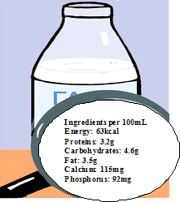

Labels of ingredients
The nutrients of food - carbohydrates, fat and proteins - provides the human body the energy it needs to maintain its vital body functions (heart beat regulation, breathing, digestion, etc.) as well as the energy it needs throughout the day (moving around, exercising, temperature, etc.). Fat contains almost twice the amount of energy (calories) compared to carbohydrates or proteins of the same quantity (see table below). Energy is measured in kilo-calories (kcal) or kilo-Joules (kJ). One kcal is equal to 1,000 calories or 4.2 kJ. In that perspective, 1 kJ is equal to 1,000 Joules or 0.24 calories.
For example:
Nutrients |
Energy per 1g |
|
kcal/g |
kJ/g |
|
Carbohydrates |
4 |
16.75 |
Fat |
9 |
37.68 |
Proteins |
4 |
16.75 |
If the nutrients of a food product (e.g. carbohydrates, fat and proteins) are known, then the energy (calories) of that product can be calculated. This corresponds to the total energy of carbohydrates, fat and proteins contained in a product. Bellow we provide an example for 100mL of milk. Later on, you will calculate the total caloric intake of your character from his or her food diary. But first, you are going to practice a little bit with these calculations.
Food provides us with energy, like petrol provides cars with fuel to run or like coal used in power stations to generate electricity to operate a factory. We use up energy in whatever activities we do. Physical work, such as walking, running and exercising, requires energy. Even resting and mental work, such as thinking, requires energy! Energy is also used in such basic body processes as the heart beat and digestion in the stomach. Measurement of Energy
Energy is found in carbohydrates, fats and proteins. Carbohydrates are the most abundant foods in the world, and fats are the most concentrated and easily stored fuel. If the body exhausts its available carbohydrates and fats, it can use proteins directly from the diet or break down its own protein tissue to make fuel.
|
For example:

Energy for 100ml of milk
|